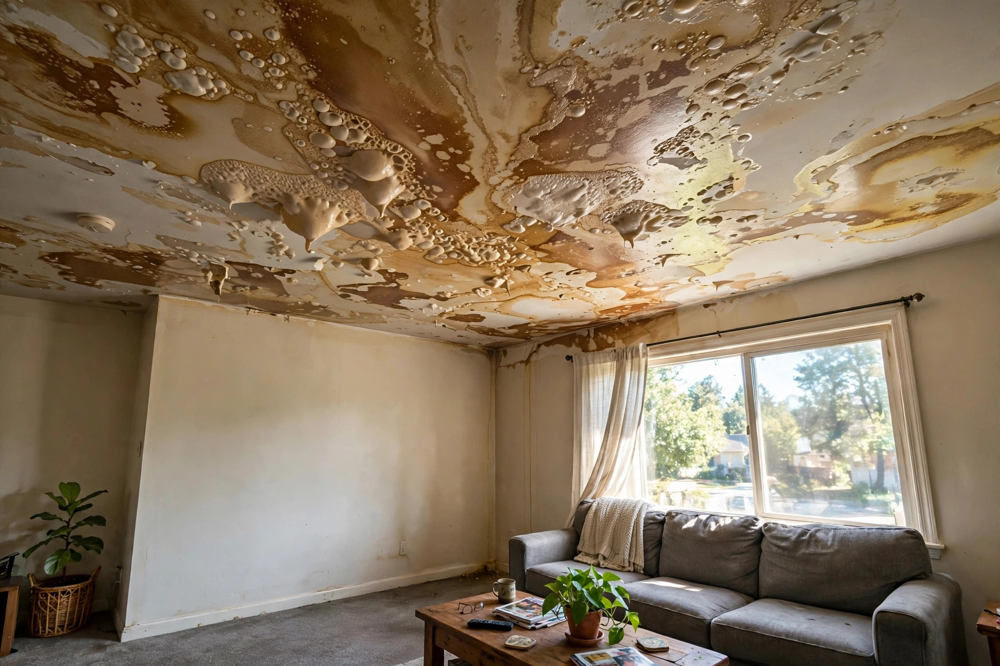
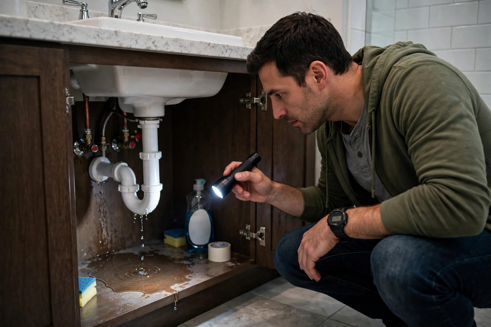
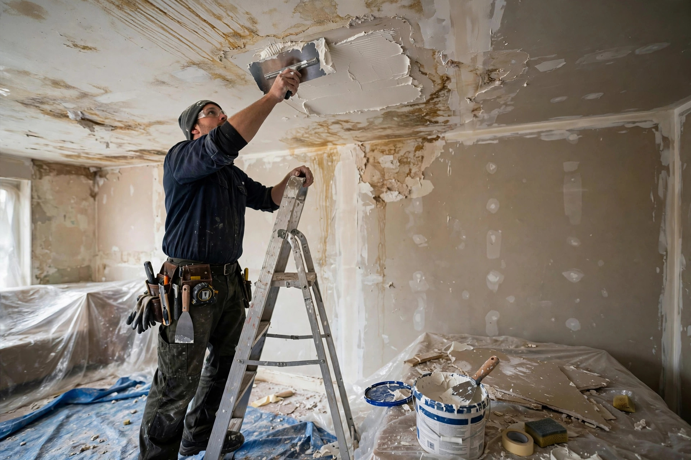

Home / Water Damage / Ceiling
Boise, Idaho · Leak to like-newCeiling water damage, repaired properly
Stains, bubbles, sagging — we find the leak above, fix the drywall below, and match the finish so it disappears.

After the repair: watch these spots
Ceiling leaks love to repeat. A twice-yearly glance at these areas catches the next one early:
- Under every upstairs bathroom — look for fresh yellowing around the toilet and tub.
- Attic side of the roof deck after the first big fall rain.
- Around the HVAC air handler's condensate pan each June.

Stain, bubble, or sag — what each means
Brown rings, still flat
Water passed through and dried. The drywall may be sound — often a moisture check, stain blocker, and repaint handles it.
Paint bubbling or peeling
Moisture is or was trapped behind the paint. The section needs drying, scraping, and refinishing — paint alone won't hold.
Soft or drooping drywall
The gypsum has absorbed water and weakened. This section comes out and gets replaced — no way around it.
Active dripping
There's an ongoing leak above. We contain the drip, trace the source, and stop it before any ceiling work begins.
Our repair checklist
- Source identified and stopped — roof, plumbing, or HVAC.
- Moisture readings on the ceiling and the cavity above, documented.
- Wet insulation above the ceiling removed and replaced.
- Damaged drywall cut back to solid, dry material.
- Texture matched to the existing ceiling before paint.

Ceiling repair questions
There's a brown stain on my ceiling but it's dry now. Do I still need repair?
Yes — the stain means water traveled through the drywall, and the paper backing may be compromised even if it feels dry. We check the moisture inside and above; if the drywall is intact and dry, sometimes a stain-blocking primer and paint is enough.
My ceiling is sagging and feels soft. Is it going to collapse?
Sagging means the drywall has absorbed significant water and lost strength. It won't necessarily fall today, but it needs to come down under control before it does. Don't push on it — call and we'll handle the removal safely.
How do you find where the leak is coming from?
We trace it upward: moisture meter on the ceiling, then into the attic or the room above. Roof leaks, plumbing, and HVAC condensation each leave different patterns. The repair starts with the source, not the stain.
Will you have to repaint the whole ceiling?
We match texture and paint the repaired area, feathering into the existing ceiling. On older ceilings with heavy texture or yellowing, a full repaint looks better — we'll tell you honestly which yours needs.
How long before I can use the room again?
Small stain repairs: same day. Sagging sections requiring drywall replacement: usually 2–3 days including drying, taping, texture, and paint cure time.
A bathroom leak over the kitchen
Imagine a two-story home where the upstairs hall bathroom sits over the kitchen. The homeowner notices a yellow-brown stain spreading on the kitchen ceiling over two weeks. Moisture mapping shows the toilet supply line has been seeping into the subfloor. Repair means fixing the supply line, opening the kitchen ceiling, replacing the wet insulation and a four-foot drywall section, then matching the knockdown texture. The EPA's mold guide notes that wet drywall should be dried within 48 hours to prevent mold — which is why we open it up rather than just painting over.
Common ceiling leak sources in Boise
Second-floor bathrooms
Two-story Boise homes put bathrooms directly over living spaces. A failed wax ring or supply line drips straight onto the ceiling below — often for weeks before the stain shows.
Ice dams and flashing
Winter ice dams push water under shingles; failed flashing around vents does the rest of the year. Attic inspection shows the entry point.
Condensate line clogs
Air handlers in attics produce condensate all summer. A clogged drain line overflows the pan and soaks the ceiling below.
Stain on the ceiling?
Send us a photo or just describe it. We'll tell you whether it's a quick fix or something that needs opening up — and what it likely costs.